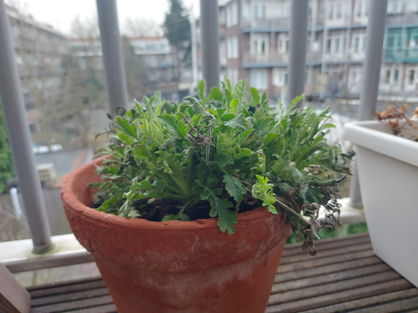

Waarom meer groen?
Meer groen in de stad is belangrijk omdat het niet alleen de natuur helpt, maar ook de stad en haar bewoners gezonder maakt. Groene plekken, zoals balkons, daken, gevels en straten, zijn als verborgen schatten die we beter kunnen benutten. Het is dan ook goed om te zien dat steeds meer mensen nadenken over het vergroenen van de stad en dat er al projecten zijn zoals de daktuin op het HvA gebouw. Het is dan ook belangrijk dat iedereen probeert bij te dragen, hoe klein hun bijdrage ook mag zijn.
Impact op mensen
Uit onderzoek blijkt dat als steden meer groene plekken hebben, het goed is voor mensen. Groene plekken maken de lucht schoner en zorgen dat het niet te warm wordt. Mensen worden ook blijer en minder gestrest als ze in de natuur zijn. Het is ook goed voor beweging en ontmoetingen met anderen. Onderzoek laat zien dat groen in steden zorgt voor een betere en fijnere leefomgeving.
Wat kan jij doen?
Maak jouw stad groener door kleine initiatieven te nemen op je balkon, dak of tuin. Overweeg het plaatsen van plantenbakken met bloemen of kruiden op je balkon die je ook nog eens kan gebruiken. Creëer een groen dak met planten die goed groeien in jouw regio, en plant bloemen en struiken in je tuin. Zelfs het toevoegen van klimplanten aan de gevel van je huis kan een verschil maken. Kleine inspanningen kunnen een grote impact hebben op het vergroenen van jouw directe omgeving en dragen bij aan een gezondere en duurzamere stad.